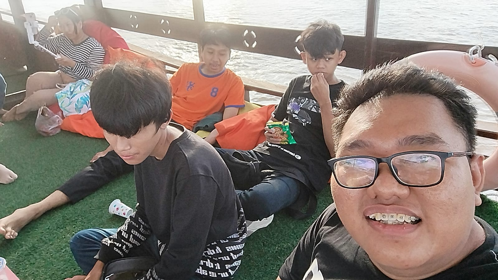
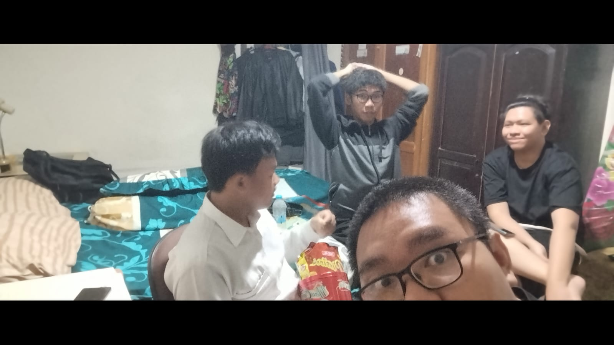
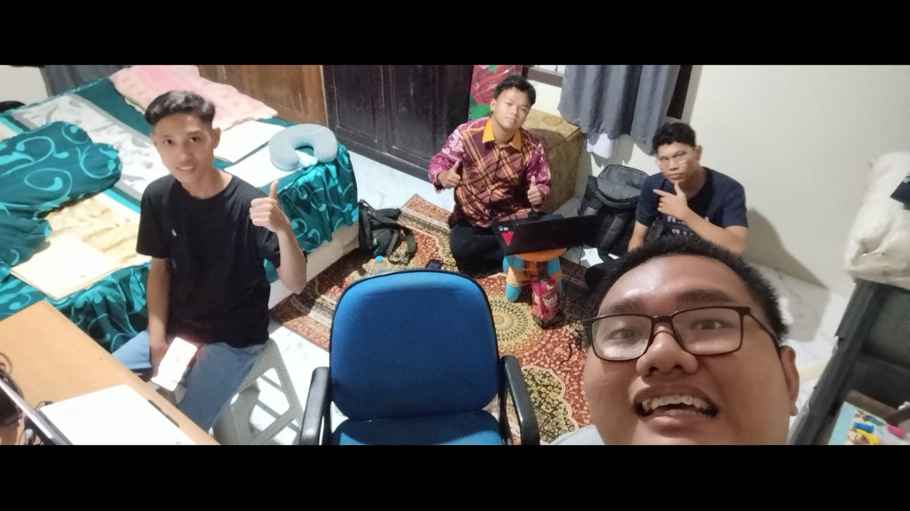

It's me and my friends! We're on a boat together.

It's me and some of my family! We're on this weird, sort of docks that's made of dirt and it proturdes to the sea. Rainy.

It's me and my friends (college edition)! We're in my bedroom discussing things regarding a school visit we had to do for an assignment.

Another of the same discussion, now with another set of friends!